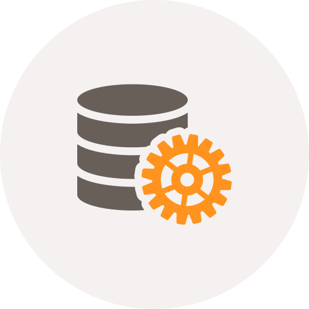

Tecnologías Actuales

Tu aplicación web desarrollada con las tecnologías más utilizadas en el mercado. Esto asegura que tu aplicación cuente con el soporte de una gran comunidad de desarrolladores, brindado a tu aplicación toda la seguridad necesaria. HTML5, CSS3, Javascript, JQuery, PHP, Ruby, Ruby on Rails, entre otras tecnologías son utilizadas para construir tu aplicación.
Diseño web Responsivo
El diseño web responsivo le permitirá a tu aplicación web adaptarse al tamaño de pantalla en el cual estas visualizando el contenido, de esta forma, tu aplicación siempre lucirá perfecto en SmartPhones, Tablets, Equipos de Escritorio, etc. Mejorando así la experiencia de usuario.
Despliegue de aplicaciones
Tu aplicación web puesta en producción. De acuerdo a tus necesidades, tu aplicación web puede ser llevada a producción en un servidor local, o en un servidor remoto. Para ambos casos se cuenta con el conocimiento para poner tu aplicación a trabajar en AWS, Heroku, Host Remoto, Host Local, etc.
Bases de datos
La persistencia de tu información es importante, es por esto que tu aplicación web podrá trabajar con cualquier motor de base de datos, desde una base SQLite, MySQL, hasta motores de bases de datos más profesionales como MS SQL u Oracle.
Metodologías ágiles
Como cliente es importante tener un feedback constante de lo que sucede en el transcurso del desarrollo de tu aplicación. Es por esta razón que tu aplicación será desarrollada bajo metodologías ágiles, lo que permitirá mantener una comunicación constante a lo largo de todo el desarrollo.
Experiencia de usuario

Uno de los factores importantes considerados al momento de desarrollar tu aplicación es la UX (Experiencia de Usuario). Gran parte del enfoque de desarrollo está destinado a entregar la mejor experiencia al usuario, utilizando tecnologías amigables, flujos de trabajo simples, interfaces amigables, etc.